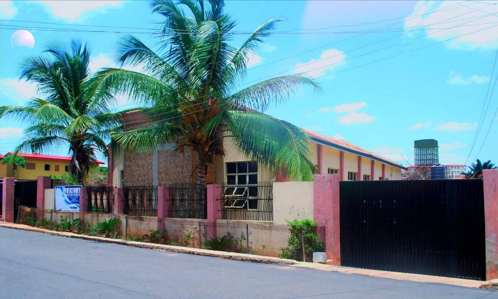

Our Baptist Heritage
We cooperate with the Goshen Baptist Association, Ogbomoso Baptist Conference and the Nigerian Baptist Convention, while working with other Christian bodies consistent with our convictions.

WELCOME TO
OVERCOMERS ASSEMBLY
A Christ-centred Baptist congregation committed to worship, discipleship, fellowship, evangelism and service.
ABOUT US
Victory Baptist Church (VBC) Ogbomoso is a local Baptist congregation under the Lordship of Jesus Christ. We believe that the Holy Spirit has vested the church with the local expression of the body of Christ, and that through prayer, discussion and collective decision-making, the purpose of God for His Church is discerned and pursued.
“Partnering together with God to raise the redeemed, triumphant and purposeful people.”
We cooperate with the Goshen Baptist Association, Ogbomoso Baptist Conference and the Nigerian Baptist Convention, while working with other Christian bodies consistent with our convictions.
The church is served through the congregation, Church Council, Pastor, ministerial and administrative staff, deaconate, and church units and departments.
Membership follows the church's established process, including faith in Christ, baptism by immersion, membership class and commitment to the VBC Membership Covenant.
CHURCH ACTIVITIES
8:30 AM Workers’ Prayer Meeting
9:00 AM Sunday School
10:00 AM Worship Service
5:00 PM Discipleship
6:00 PM Bible Study
5:00 PM Women’s Fellowship
6:00 PM Choir Rehearsals
6:00 PM Prayer Meeting
4:00 PM Neighbourhood Evangelism
4:30 PM Sanctuary Keeper’s Meeting
5:00 PM Choir Rehearsals
5:00 PM Sunday School Prep. Class
First Monday · 5:00 PM
First Saturday · 6:30 AM
Third Sunday
5:30 PM
OUR PASTOR
Rev’d. Abraham A. Okunade (Ph.D.) serves as the Church Pastor of Victory Baptist Church, Ogbomoso. This section is intentionally kept concise until the official pastoral biography and photograph are provided.
CONTACT US
We would love to have you with us. Join our services and be part of our church family.
📍 Along Efumtade Oyegbami Street,
Isale General Area,
P.O. Box 86, Ogbomoso, Oyo State.
☎ 08073101313 · 08146417123
Church Secretary: 08066499871
✉ victorybcogbomoso@gmail.com